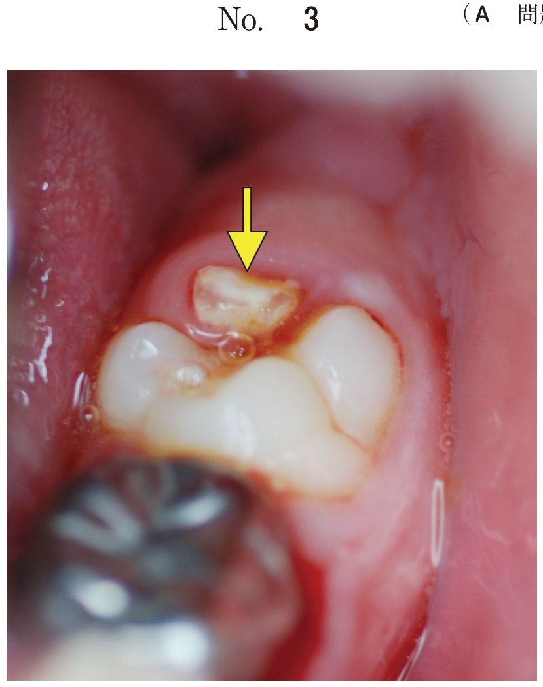

気管挿管後は、チューブが正しく気管内に挿入されているか確認する。
| 方法 | 特徴 |
|---|---|
| ETCO2（終末呼気CO2） | 最も確実な指標、波形で確認 |
| 両側肺野の聴診 | 呼吸音の左右差で片肺挿管を除外 |
| 胸郭の挙上 | 視覚的に換気を確認 |
| 胸部X線撮影 | チューブ先端位置の確認 |
気管挿管後に気管チューブ挿入状態を確認するのに適切なのはどれか。2つ選べ。
【解説】b両側側胸部の聴診で呼吸音を確認し、eETCO2測定で気管挿管を確認する。SpO2は換気状態の指標だが、食道挿管の即時診断には不向き。
気管チューブはカフが声門より下、先端が気管分岐部より上に位置させる。
気管チューブと声門、気管、気管支の位置関係の図（別冊No.7）を別に示す。
適切な気管チューブの位置はどれか。1つ選べ。

【解説】ウが適切。カフが声門より下で気管内にあり、先端が気管分岐部より上。ア・イは浅すぎ、エ・オは深すぎ（片肺挿管）。
| 器具 | 挿入部位 | 特徴 |
|---|---|---|
| 経口エアウェイ | 口腔内 | 舌根沈下の防止 |
| 経鼻エアウェイ | 鼻腔→咽頭 | 開口困難時に有用 |
| ラリンジアルマスク | 喉頭蓋谷 | 声門上器具、気管内ではない |
| 気管チューブ | 気管内 | 確実な気道確保 |
| 気管切開チューブ | 気管内 | 長期人工呼吸管理 |
開口時の口腔内所見から挿管困難を予測する分類。Class IVで挿管困難リスクが高い。
| Class | 所見 |
|---|---|
| Class I | 軟口蓋、口峡、口蓋垂、扁桃が見える |
| Class II | 軟口蓋、口峡、口蓋垂が見える |
| Class III | 軟口蓋、口蓋垂の基部のみ見える |
| Class IV | 軟口蓋が見えない |
| 疾患 | 特徴 |
|---|---|
| Treacher Collins症候群 | 小下顎、頬骨低形成 |
| Pierre Robin症候群 | 小顎症、舌根沈下、口蓋裂 |
開口制限がある場合、通常の喉頭鏡では挿管困難。以下の器具が有用。
開口制限のある挿管困難患者に対し、気管挿管を行うのに有用なのはどれか。2つ選べ。
【解説】cビデオ喉頭鏡は開口が小さくても声門を確認可能。eファイバースコープは経鼻的に挿管でき、開口制限の影響を受けにくい。開口器は顎関節強直症では使用困難。